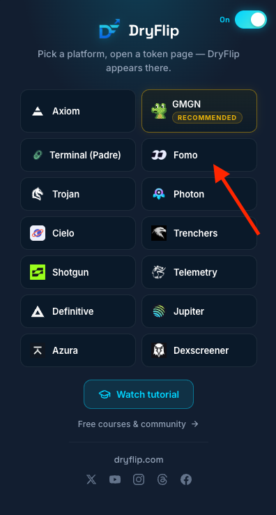
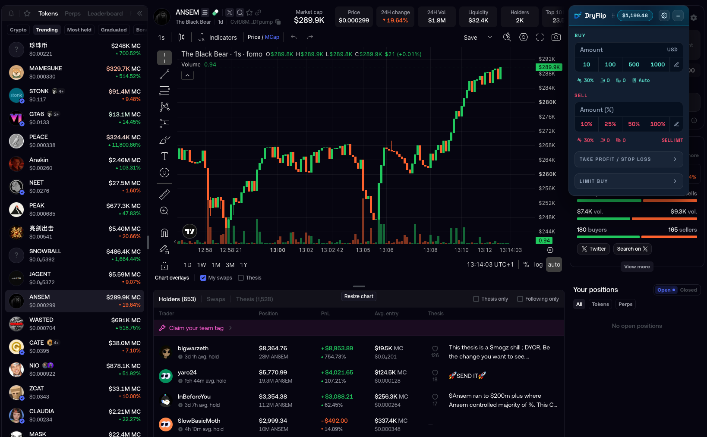
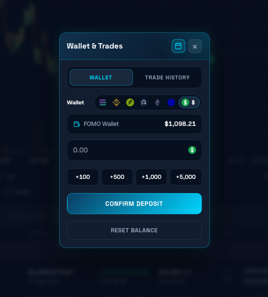
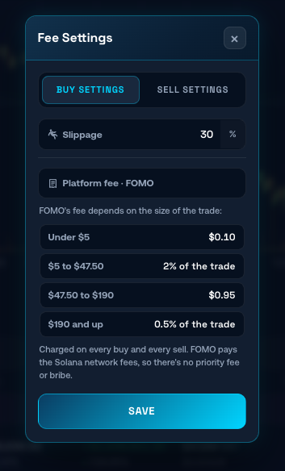
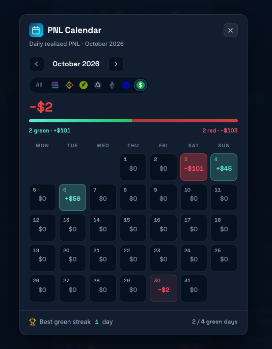
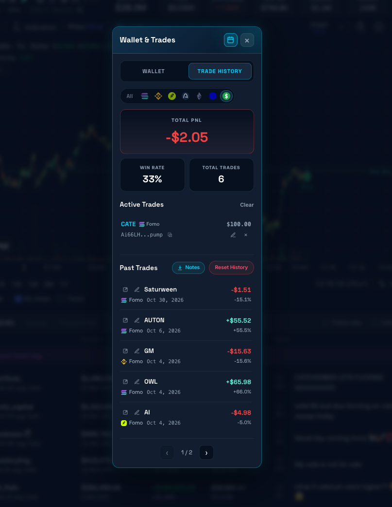

How to paper trade on FOMO (video tutorial)
FOMO has no demo mode. I found that out the expensive way. In this video I set up DryFlip, a free extension that drops a fake-money trading panel on FOMO token pages. Same live charts, same fees, zero real SOL on the line.
Free extension. Works on fomo.family in your desktop browser. Not financial advice, obviously.
Fake money
Real charts, live prices
Real fees
FOMO's actual fee tiers
Real receipts
Win rate and a PnL calendar
Does FOMO have paper trading? Nope.
I dug through every FOMO setting looking for a practice mode. There isn't one. Every tap on that buy button is real money, and the trending tab is built to make you tap it.
So can you paper trade on FOMO? Yes, with DryFlip. Open the extension, pick Fomo, then open any token on fomo.family. A buy/sell panel shows up on the page, running on a balance that doesn't exist. Same works on Axiom, GMGN, Photon, Padre and a dozen more if you trench elsewhere too.

How to paper trade on FOMO in 4 steps
-
STEP 1
Install DryFlip
Free on Chrome, Edge and Firefox. Pin it to your toolbar so it's one click away.
-
STEP 2
Pick Fomo
Open the popup, tap Fomo, then open any token on fomo.family. The panel pops up top right.
-
STEP 3
Load a fake bag
Wallet & Trades → deposit +$100 to +$5,000. Blew it up? Hit reset. No one has to know.
-
STEP 4
Send it (on paper)
Buy in $10 to $1,000 presets, sell 10–100%, set take profit, stop loss or a limit buy.


So real you'll check your Phantom twice
The panel sits on the real FOMO chart, so you're reading the same candles, holders and theses as everyone else. You just aren't paying for the lesson. First time I sold a paper bag at 2x I genuinely refreshed my wallet to make sure nothing moved. It hadn't.
Wallet balance lives in the extension, separate from your real FOMO account. Top it up, drain it, reset it. Your actual bags stay untouched.
Your paper PnL isn't cope
Most simulators skip fees and make you feel like a genius. DryFlip charges FOMO's real platform fee on every simulated buy and sell, plus whatever slippage you set. Spam $3 entries and you'll see exactly why that's a bad idea.
Per trade, each way. FOMO covers Solana network fees, so no priority fee or bribe.



The PnL calendar doesn't lie
Every paper trade lands in Trade History with total PnL, win rate and per-trade notes. The calendar paints each day green or red. You can't screenshot only the winners when the whole month is staring back at you.
Write why you entered in the notes. Future you will want to know what past you was thinking.
"My first month on FOMO I copied every thesis on trending and became exit liquidity for most of them. Now every new narrative gets a week on paper first. Last month: 6 paper trades, 33% win rate, down $2.05. Down two bucks beats down two SOL."
Frequently asked questions
Everything people DM me about FOMO paper trading.
Does FOMO have paper trading?
+
No. FOMO has no built-in paper trading or demo mode, and every trade uses real funds. To paper trade on FOMO you need a third-party tool like DryFlip.
Can you paper trade on the FOMO app?
+
Not on your phone. DryFlip is a browser extension, so you paper trade on fomo.family in a desktop browser. Practice on the laptop, execute on the app once you've earned it.
Is the FOMO paper trading extension free?
+
Yes. DryFlip is free on Chrome, Edge and Firefox. The fake money is also free, which is the best part.
Does it simulate FOMO's fees?
+
Yes. FOMO's platform fee tiers get applied to every simulated buy and sell, plus your slippage setting. Check the fee table above.
Is a FOMO simulator the same as trading for real?
+
Close, not identical. Charts, prices and fees are live, but paper fills don't move thin order books and a fake loss doesn't hit the same. If you can't stay green on paper, real money won't fix that.
Does it work on other platforms besides FOMO?
+
Yes. The same extension covers Axiom, GMGN, Padre, Photon, Trojan, Jupiter, Dexscreener and more. Pick the platform in the popup and open a token page. More at dryflip.com.
Paper hands first. Diamond hands later.
Free extension · No real funds · Set up in a few minutes